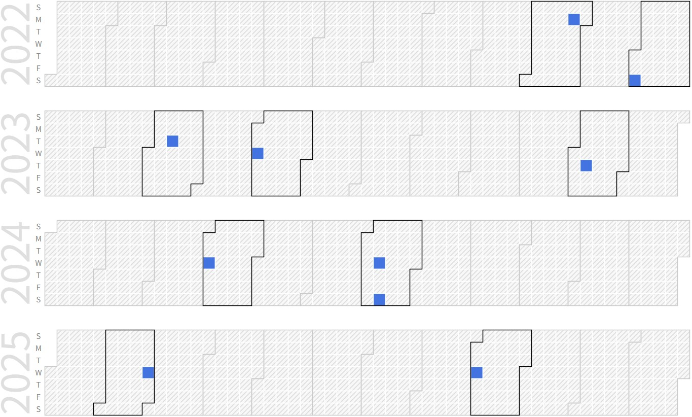

Suhwan Lee (Ph.D. Candidate, Senior Researcher @ LG Electronics)
Ph.D. Candidate |
Repository Commit History
|  |
Introduction
Full Bio Sketch
Mr. Lee is now with LG Electronics as senior research engineer, developing Embedded network SW include Wi-Fi module installed in Smart home Appliances(IOT). He received the B.S degree in Computer Engineering at Korea Maritime University, Pusan, Korea in 2011 and M.S degree in Computer Engineering at Pusan National University, Pusan, Korea in 2013. His research interests IoT Networking solutions and security design for weak Electric Fields.
Research Topic
Ambient Network-based Enrollment and Link Management of IoT Smart Things
 Recently, the demand for smart features in home appliances has increased, and most appliances now come equipped with Wi-Fi modems, allowing for expanded smart functionality. To utilize these features, an onboarding process is required to connect the appliance's Wi-Fi modem to the internet-connected router.
Recently, the demand for smart features in home appliances has increased, and most appliances now come equipped with Wi-Fi modems, allowing for expanded smart functionality. To utilize these features, an onboarding process is required to connect the appliance's Wi-Fi modem to the internet-connected router.
Although advancements in display and input technology, such as the installation of TFT LCD, have been made in premium products, most smart appliances are still limited in terms of environment, making it impossible to select a router or input a password. To overcome this limitation, users can use a smartphone app to select a router and input a password, which is then communicated to the Wi-Fi modem via the smartphone. However, due to the closed OS policy of iOS, iPhone apps cannot control Wi-Fi, making it difficult to connect and register products.
Furthermore, as the security policies of AOS are strengthened with OS updates, there are functional issues as Wi-Fi profiles cannot be modified. To address these issues, an alternative method of connecting and registering products that does not rely on Wi-Fi profiles is proposed.
Network-based Structured Aware Collaborative Control
 Recently, the demand for smart features in home appliances has increased, and most appliances now come equipped with Wi-Fi modems, allowing for expanded smart functionality. To utilize these features, an onboarding process is required to connect the appliance's Wi-Fi modem to the internet-connected router.
Recently, the demand for smart features in home appliances has increased, and most appliances now come equipped with Wi-Fi modems, allowing for expanded smart functionality. To utilize these features, an onboarding process is required to connect the appliance's Wi-Fi modem to the internet-connected router.
Although advancements in display and input technology, such as the installation of TFT LCD, have been made in premium products, most smart appliances are still limited in terms of environment, making it impossible to select a router or input a password. To overcome this limitation, users can use a smartphone app to select a router and input a password, which is then communicated to the Wi-Fi modem via the smartphone. However, due to the closed OS policy of iOS, iPhone apps cannot control Wi-Fi, making it difficult to connect and register products.
Furthermore, as the security policies of AOS are strengthened with OS updates, there are functional issues as Wi-Fi profiles cannot be modified. To address these issues, an alternative method of connecting and registering products that does not rely on Wi-Fi profiles is proposed.
Due to security concerns, a confirmation process is necessary to ensure that the product being connected is legitimate. If the product has been purchased or attempted to be registered before, the server considers it confirmed. Based on the confirmed network information or the information of registered products in the account, quick and accurate connection and registration can be provided without customer intervention. Additionally, a network optimized for continuous service is established based on the information collected through communication between products.
In addition to researching control efficiency through time multiplexing in collaborative control systems and evaluating network-based collaborative control algorithms through simulation and emulation, we are also investigating optimizing resource allocation with cost function-based decision-making in collaborative networks. These efforts collectively contribute towards the development of adaptive control algorithms tailored for IoT devices in collaborative control systems.
Publication
Journal Publicaiton
Conference Presenation
Suhwan Lee and Daejin Park. Network-based Structured Aware Collaborative IoT Devices Control using Adaptive Sensing for Edge-Cloud Traffic Reduction (Under Review) In IEEE ICCE-Asia 2024, 2024.
Participation in International Conference
Last Updated, 2024.05.28